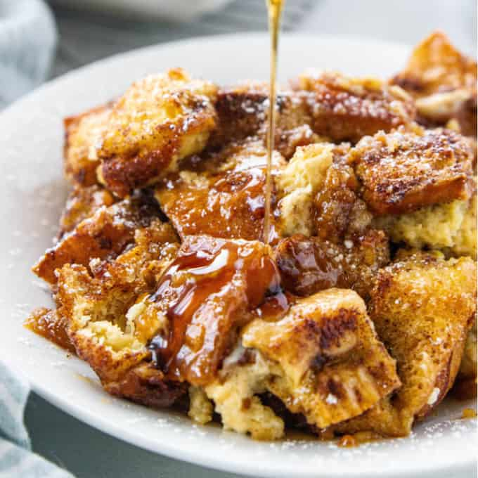

French Toast Casserole

Description
This easy French toast casserole comes together with ingredients you likely already have on hand.
This dish pairs well with breakfast and brunch favorites, such as bacon or eggs. Of course, fresh berries are the perfect way to add a bright pop of color and fruity flavor.
Ingredients
- Brown sugar
- Butter
- Bread
- Eggs
- Milk
- Vanilla
- Cinnamon
Optional: Sprinkle powdered sugar over the finished casserole for a burst of sweetness.
Steps
- Make the French toast: Cook the butter with a cup of brown sugar until the butter is melted and the sugar is dissolved, then pour the mixture into a prepared baking dish. Scatter the bread pieces over the butter mixture. Mix the milk, vanilla, and eggs together, then pour over the bread.
- Refrigerate: Cover the casserole and transfer to the fridge. Refrigerate at least 8 hours or up to overnight.
- Bake the casserole: Remove the casserole from the fridge and uncover. Sprinkle with a mixture of brown sugar-cinnamon, then bake in the preheated oven until the casserole is browned and bubbling.